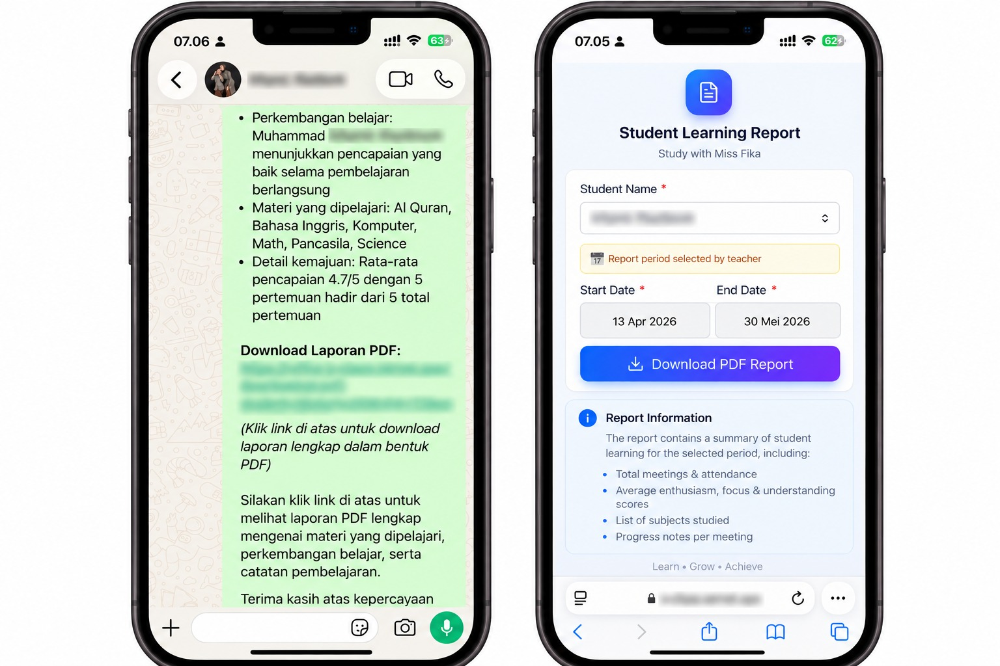

Tutoring Management & Automation System
Automated End-to-End Tutoring Workflow & Student Progress Reporting Platform

Tutoring Management & Automation System adalah platform manajemen bimbingan belajar terpadu yang dirancang khusus untuk mengotomatisasi seluruh alur kerja bimbingan belajar personal secara profesional, terorganisir, dan efisien.
Sistem ini mengintegrasikan pencatatan presensi siswa, pemantauan kurikulum, silabus materi, catatan evaluasi per sesi pertemuan, hingga otomasi pembuatan laporan hasil belajar siswa dalam format PDF berdesain rapi. Selain itu, sistem dilengkapi fitur rekapitulasi progres bulanan otomatis yang dikirimkan langsung kepada orang tua siswa melalui integrasi WhatsApp.
Dengan adanya platform ini, proses administrasi pengajaran yang sebelumnya memakan waktu dan rentan tercecer dapat disederhanakan menjadi satu ekosistem digital otomatis yang meningkatkan transparansi dan kepuasan orang tua siswa.
- Student Attendance & Session Tracker: Pencatatan presensi siswa real-time dengan log waktu, status kehadiran, dan topik materi yang dibahas pada setiap sesi pertemuan.
- Curriculum & Learning Progress Monitoring: Manajemen silabus dan tracking progres pemahaman siswa per bab materi pelajaran (kurikulum Nasional/Merdeka & Cambridge).
- Meeting Notes & Comprehensive Evaluation: Catatan evaluasi personal per pertemuan yang mencakup keaktifan, pemahaman konsep, serta area perbaikan siswa.
- Automated PDF Learning Report Generator: Pembuatan kartu laporan belajar (learning progress report) profesional secara otomatis dalam format PDF berstandar rapi.
- Monthly WhatsApp Recap Automation: Otomasi pengiriman rekap progres belajar bulanan dan laporan kehadiran langsung ke nomor WhatsApp orang tua siswa.
- Parent Transparency Portal & Notifications: Memberikan update transparan kepada orang tua mengenai perkembangan akademis dan konsistensi belajar anak.
- Student & Schedule Database: Manajemen data siswa, jadwal les terjadwal, kalender sesi bimbingan, dan riwayat materi komprehensif.
- Efisiensi Waktu Signifikan: Mengurangi hingga 80% waktu yang dibutuhkan untuk rekap manual, pencatatan jadwal, dan penyusunan laporan bulanan.
- Otomasi Pelaporan Tanpa Hambatan: Menghilangkan proses pembuatan laporan manual per siswa lewat generator PDF otomatis.
- Kepuasan & Kepercayaan Orang Tua: Transparansi hasil belajar yang konsisten dan tepat waktu membangun relasi profesional yang kuat dengan orang tua murid.
- Pusat Data Terpusat: Seluruh riwayat pembelajaran terdokumentasi rapi dalam satu basis data yang mudah dianalisis untuk melihat perkembangan performa siswa.